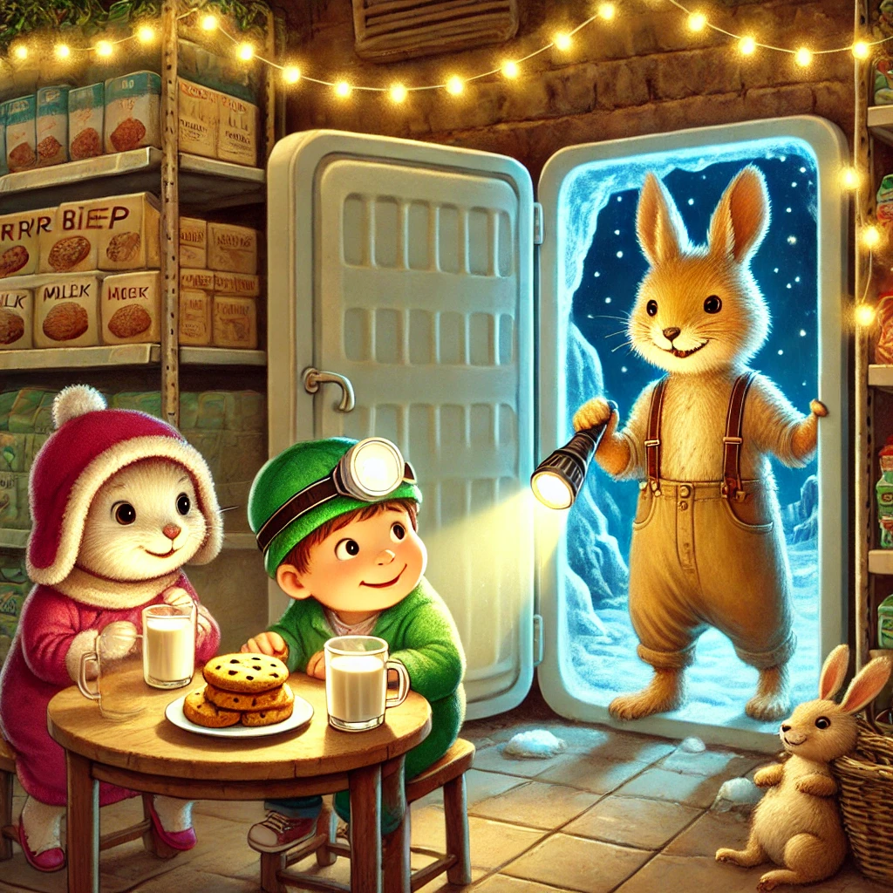
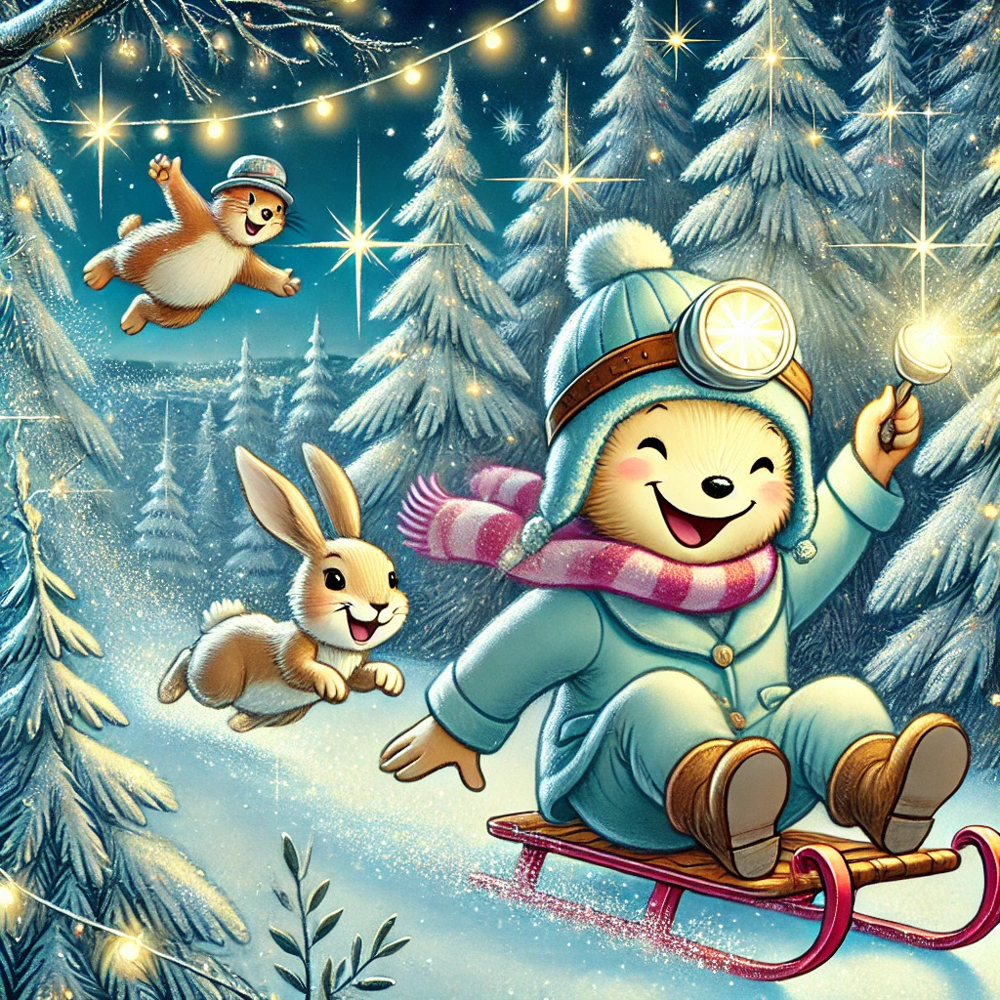

Es war einmal ein Wiesel namens Winnie, das oben auf dem Knabbereienregal eines Supermarkts in Leknes auf den Lofoten wohnte. Eines Tages - Winnie hatte gerade eine riesige Tüte Chips verschlungen - hörte Winnie ein warmes, lebendiges und sehr ansteckendes Lachen. Neugierig blinzelte Winnie über die Regalkante. Unten stand eine Familie: Mama, Papa und zwei kleine Mädchen.

Das ältere von beiden hielt sich vor Lachen den Bauch und zeigte auf einen Luftballon, der einen Elefantenrüssel, eine Löwenmähne, Hundeschlappohren und ein Zebrafell hatte. Ihre Schwester und beide Eltern begannen zu singen: "Zum Geburtstag viel Glück, zum Geburtstag viel Glück, zum Geburtstag liebe Luisa, zum Geburtstag viel Glück!"
"Und jetzt, auf zum Küchenregal!", rief Papa und die vier zogen begeistert los, um den tollsten Kuchen für die tollste Luisa zu kaufen. Winnie folgte ihnen neugierig. Selten hatte sie eine so lebensfrohe, freundliche Familie beim Einkaufen erlebt. Sie bog gerade um sie Ecke als Luisa sich für einen Kuchen in Form der Raupe Nimmersatt entschied, der umringt war von vielen kleinen Marienkäfern.
Winnie hatte den plötzlichen Einfall, ein Geschenk für Luisa zu finden. Aber was nur? Was könnte man einem so tollen, fröhlichen Mädchen schenken, was sie noch nicht hatte. Winnie überlegte fieberhaft: Chips! Immer eine gute Idee! Hmm, vielleicht zu wenig geburtstagig. Einen Lolli? Winnie viel auf, dass alles Vorschläge mit Essen zu tun hatten und ziemlich ungesund waren. Dann fiel ihr etwas ein: sie selbst liebte den Schnee so sehr. Sicher würde er auch Luisa glücklich machen. Ein Glas voller magischer Schneeflocken! Sie wollte ein kleines Glas mit Glitzer und Schneeflocken füllen, das aussieht, als hätte sie es direkt aus ihrem Winterwald mitgebracht. Eine kleine handgeschriebene Nachricht könnte dabei sein: „Damit du immer ein Stück Winterzauber bei dir hast.“
Sie eilte los und sammelte erst ein kleines Schraubglas, dann Glitzer und eine kleine Karte aus der Bastelabteilung und zu guter Letzt Schnee vom Vordach des Supermarkets. Gerade als die kleine Familie den Supermarkt verlassen wollte, schlitterte Winnie geradewegs auf sie zu. Luisa beugte sich neugierig hinunter und Winnie sagte schüchtern: "Freude wird größer, wenn man sie teilt. Und ich glaube, du teilst gerne. Wenn ich dir Freude schenke, dann breitet sie sich aus." Das war ungewöhnlich einfühlsam für Winnie und sie wurde ein bisschen rot. Aber manchmal muss auch ein Wiesel einen großen Schritt wagen. Luisa strahlte sie an und nahm das Glas entgehen. Winnie merkte direkt, dass sie Recht hatte: die Freude auf Luisas Gesicht breitete sich auch in ihr aus. "Alles Gute zum Geburtstag, Luisa!", strahlte Winnie.